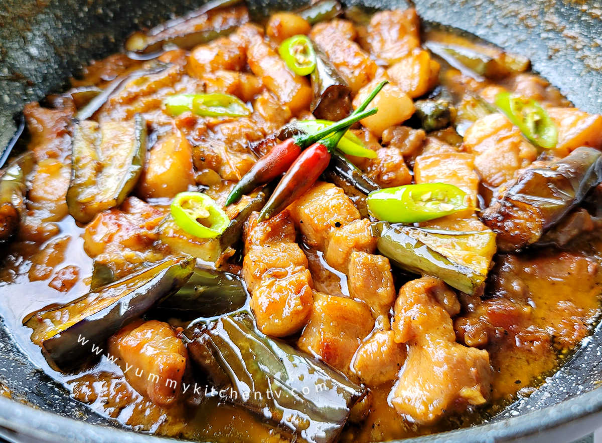
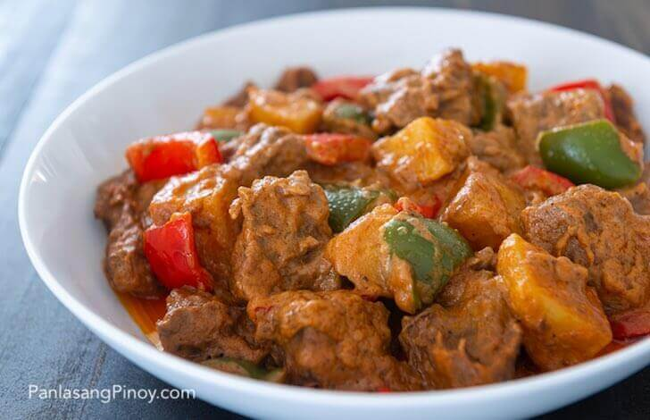

-
Pork Binagoongan
Also called "Binagoongang Baboy". This is a somewhat spicy meat dish made by cooking pork in fermented shrimp paste or "bagoong" along with other vegetables and spices. In the case of the linked article, coconut milk or "gata" is also added to further enhance its taste.
-
Bicol Express

This spicy dish is made by cooking sliced pork bellies in coconut cream along with other spices. A little bit of shrimp paste or "bagoong" can also be added along with the other spices for additional flavor.
-
Caldereta
This dish consists of pork or beef cooked with coconut milk, liver spread, and peanut butter. However, the provided cooking article does not use liver spread in its recipe and uses beef, but may still be the same. I guess that's just the beauty of Filipino dishes is that there exists multiple versions of it.
-
Adobo

Not really an authentic Filipino dish as per the linked article, but is recognized as one. It can be cooked with either chicken, pork, vegetables, or even seafood, and is marinated and simmered in vinegar, soy sauce, garlic, and additional spices.
-
Kare-Kare

One of the popular dishes and mostly served during special dishes due to its somewhat arduous cooking method. It is a type of stew with rich and thick peanut sauce. It consists of meat and vegetables and is eaten with a dip of shrimp paste or "bagoong". I can't fully describe the dish so it would be best you check the linked article too!